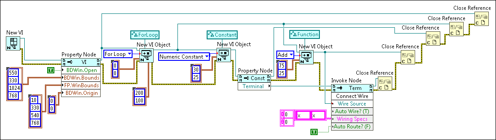

Use VI Scripting to wire objects on the block diagram programmatically. Most objects you can place on the block diagram are considered nodes. For example, functions, VIs, and structures are nodes. Typically, nodes have multiple terminals to which you can wire. Use the Connect Wires method to connect a wire, or wires, to a node. Use the Connect Wire method to connect a wire to a single terminal.
Note
This topic assumes familiarity with the VI Scripting introduction.
You must enable VI Scripting to display the VI Scripting VI and functions and use the associated properties and methods.
Wiring Nodes
Complete the following steps to wire two Add functions together using VI Scripting.
Note Nodes are in the Generic»GObject»Node class.
Complete the previous exercise if you have not already completed it. If the untitled VI you created in the previous exercise is still open, close the VI.
Delete the Move method and related wires from the block diagram.
Complete the following steps to place the Add function in the For Loop.
Enter 30 and 25 as the values of the Horizontal and Vertical inputs, respectively, for the New VI Object function that creates the Add function.
Remove the wire from the owner refnum input of the New VI Object function that creates the Add function, as well as any broken wires.
Wire the object refnum output of the New VI Object function that creates the For Loop to the owner refnum input of the New VI Object function that creates the Add function.
Create another Add function inside the For Loop with the values 75 and 25 in the Horizontal and Vertical inputs, respectively. Refer to the block diagram in step 12 for a visual reference.
Add an Invoke Node to the block diagram to the right of the New VI Object function you added in the previous step.
Add Find
Wire the object refnum output of the New VI Object function that creates the first Add function to the reference input of the Invoke Node.
Click the Invoke Node and select Connect Wires from the shortcut menu.
Wire the object refnum output of the New VI Object function that creates the second Add function to the Wire Source input of the Connect Wires method.
Right-click the Wiring Specs input of the Connect Wires method and select Create»Constant from the shortcut menu.
Enter the names of the input and output you want to connect with a wire in the Wiring Specs constant, in this case x and x+y.
Note Alternatively, situations might allow for auto-wiring rather than explicitly specifying the name of the terminals you want to wire. You can set the Auto Wire? input to TRUE to allow LabVIEW to wire the source object to a compatible, nearby object automatically.
To specify that LabVIEW finds the best path for the wire, right-click the Auto Route? input of the Connect Wires method, create a constant, and set the constant to TRUE.
Close references to the objects and complete all wiring to match the following block diagram.
LabVIEW creates and opens untitled front panel and block diagram windows. The block diagram contains a For Loop in the upper left-hand corner and two Add functions in the For Loop. The Add functions are wired together.
Wiring Objects
This exercise wires a terminal to a node. To wire to a terminal, use the Connect Wire method. Complete the following steps to wire a constant to an Add function using VI Scripting.
Note The terminal reference for a numeric constant is in the Generic»GObject»Constant class.
Complete the Wiring Nodes exercise, if you have not already completed it. If the untitled VI you created in the previous exercise is still open, close the VI.
On the New VI Object function that creates the first Add function, change the style input to Numeric Constant, change the vi object class input to Constant, and remove the wires from the object refnum and error out outputs.
Add a Property Node to the block diagram to the right of the New VI Object function that now creates a numeric constant. Refer to the block diagram in step 9 for a visual reference.
Add Find
Wire the object refnum output of the New VI Object function that creates the numeric constant to the reference input of the Property Node.
Click the Property Node and select Terminal»Reference from the shortcut menu.
Wire the Terminal output of the Property Node to the reference input of the existing Invoke Node.
Click the Invoke Node and select Connect Wire from the shortcut menu.
Change the value of the Wiring Specs input of the Connect Wire method to the names of the input and output you want to connect with a wire, in this case x and x.
Complete all wiring to match the following block diagram.

Save the VI.
Run the VI
LabVIEW creates and opens untitled front panel and block diagram windows. The block diagram contains a For Loop in the upper left-hand corner, and a numeric constant and Add function in the For Loop. The numeric constant and the Add function are wired together.

 Add
Add
 Find
Find